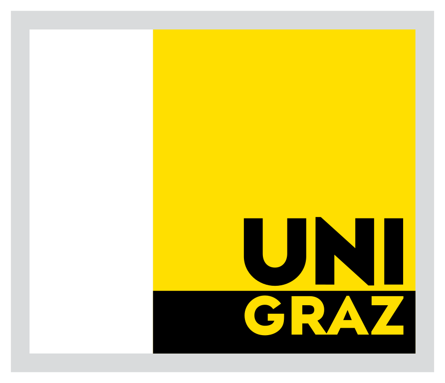

Referenzen
Schwerpunkte und Erfahrung
Langjährige nationale und internationale Erfahrung in betriebswirtschaftlichen, finanziellen und IT-nahen Fragestellungen.
- Erfahrung
Controlling und Finanzsteuerung
Begleitung bei Planung, Steuerung, Reporting und wirtschaftlicher Weiterentwicklung.
- Erfahrung
Internationalisierung und Wachstumsbegleitung
Unterstützung bei internationalen Herausforderungen, Expansion und organisatorischer Entwicklung.
- Erfahrung
ERP-nahe Prozess- und IT-Beratung
Verbindung betriebswirtschaftlicher Anforderungen mit benutzerfreundlichen und praxistauglichen IT-Lösungen.
- Erfahrung
Training, Vorträge und Wissenstransfer
Lehraufträge, Seminare und praxisnahe Vermittlung komplexer wirtschaftlicher Inhalte.
Unternehmen und Institutionen
Auswahl bisheriger Zusammenarbeit
Bildung und Hochschulen
 BFI Steiermark
BFI Steiermark FH Campus 02
FH Campus 02 FH Hamburg
FH Hamburg- Land- und forstwirtschaftliche Ausbildungsstätte Steiermark
 Pädagogische Hochschule Steiermark
Pädagogische Hochschule Steiermark
Universität Graz WIFI Steiermark
WIFI Steiermark
Dienstleistung und Gesundheit
 Kurzentrum Althofen GmbH
Kurzentrum Althofen GmbH Saubermacher Dienstleistungs AG
Saubermacher Dienstleistungs AG
Weitere Unternehmen
 ams - austriamicrosystems AG
ams - austriamicrosystems AG ATB Austria Antriebstechnik AG
ATB Austria Antriebstechnik AG AVL List GmbH
AVL List GmbH Efkon AG
Efkon AG Frauenthal Holding AG
Frauenthal Holding AG Meadwestvaco GmbH
Meadwestvaco GmbH Security KAG
Security KAG VAE GmbH
VAE GmbH voestalpine AG
voestalpine AG- ZAT GmbH
- u. v. m.
Orientierungsgespräch
Eine Fragestellung, über die Sie sprechen möchten?
Schildern Sie Ihr Anliegen kurz per Formular oder E-Mail. Im unverbindlichen Orientierungsgespräch klären wir, ob und wie ich Sie unterstützen kann.